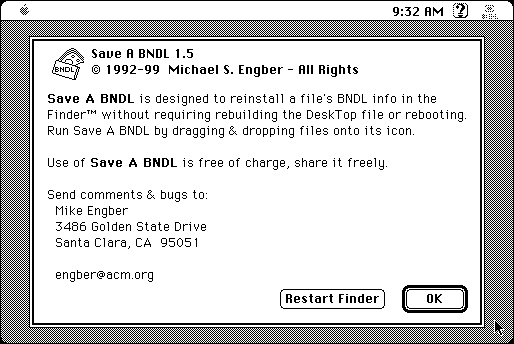

Download
Save_A_BNDL_1.5.zip (20K) Save a BNDL 1.5 repackaged into a zipped hfs disk image and checksum file. The disk image can be mounted with Mini vMac.
Save_A_BNDL_1.5.sit (16K) Save a BNDL 1.5 in the original format.
copyright: Michael S. Engber, T. Templemann
mod date: June 28, 2004
license: Freeware
from url :
Thomas Tempelmann's Macintosh Software
Gets “the Finder to recognize changes in a file's BNDL resource without requiring rebuilding the Desktop Database or rebooting. It only runs under System 7.0 and later.” Also, if you have multiple versions of an application, you can set which one is launched when you double click on a document. System 7.5.5 is needed for full functionality, otherwise restarting the finder or rebooting is needed (and the program provides buttons to do these). It will not operate on disks which are less than 2M in size (such as the image I provide).

If you find these downloads useful, please consider helping the Gryphel Project, which hosts them.
Here are the md5 checksums for the downloads, signed with Gryphel Key 5:
--------- GRY SIGNED TEXT --------- 2a03ee92abe7e8535a301bdba63bc55e Save_A_BNDL_1.5.zip 1a99557bdc6f0cbab281fab1d56e9378 Save_A_BNDL_1.5.sit ------- BEGIN GRY SIGNATURE ------- Gry/4Xa8CFcUzxdN/Ogq9m7r17R7Yirg8euCZ2+XAgcAJetiWkGRcZ0B3Z2KN80C NQO36mq9q7yZ+R9K49UGEcW36Th0awf9Wb+qvVzCsHuqu2NDfrRLcnwIflwbfNnZ 6EUxMUPXpZS7vKavFPDSkUntNOnIW0O+SMHPqT/2VDUgKYffsUMhU0EF0syH//qn -------- END GRY SIGNATURE --------